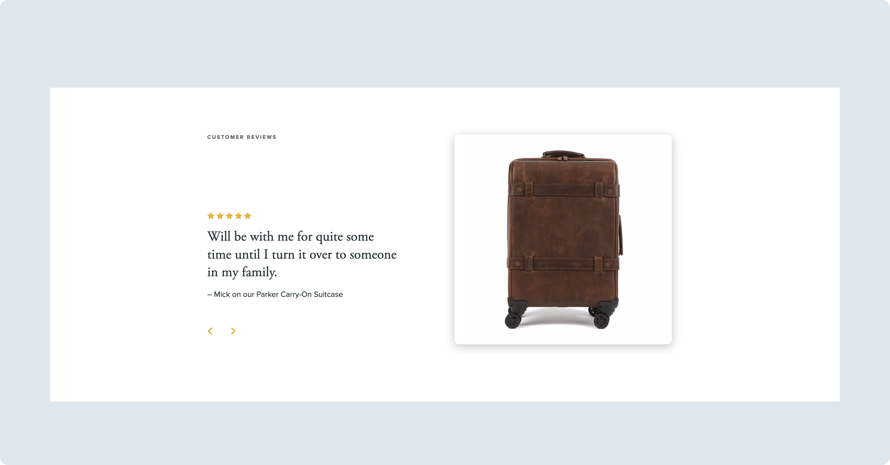
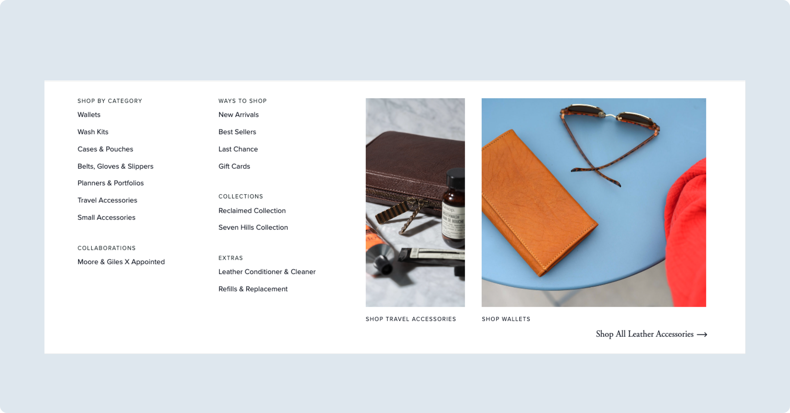
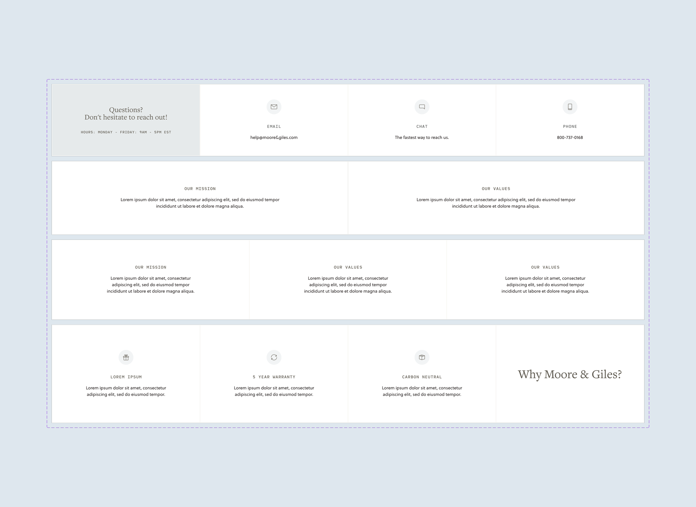
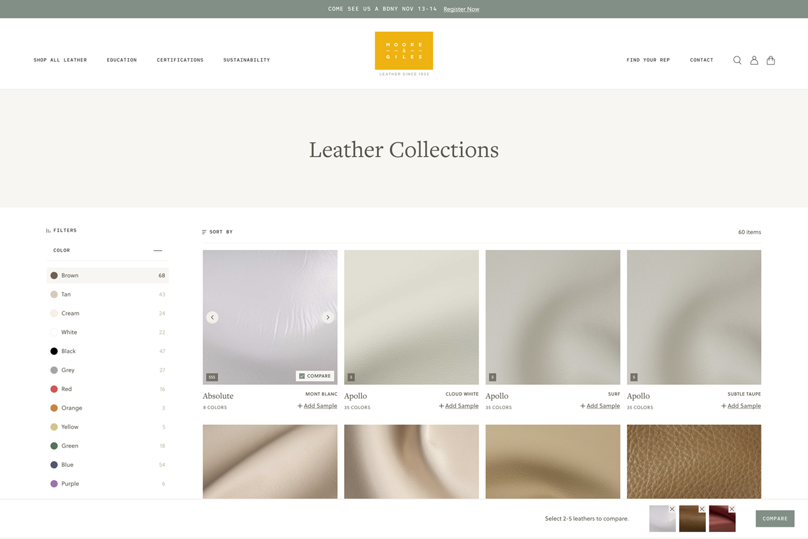
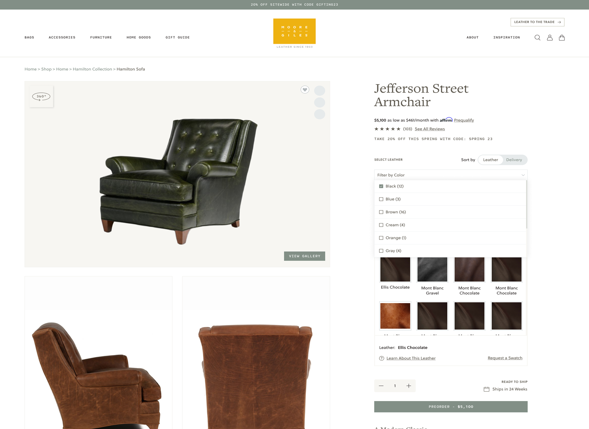

Moore & Giles
Timeline
Sep 2021 – Apr 2023 (2 years)

Workplace
Trellis
Role
UI/UX Design Lead
Project
Full Site Build
Contributors
Joey Hoer
Trellis Business–Systems Analyst
Janine Coleman
Moore & Giles–Senior Designer
Brand Overview
Moore & Giles is a family-owned brand founded in 1933, known for its premium leather goods and luxury furnishings. Based in Forest, Virginia, the company began as a leather footwear business and has grown into a retailer offering furniture, bags, accessories, clothing, and lifestyle pieces. Rooted in craftsmanship, Moore & Giles works with full-grain leather designed to age beautifully and last for generations.
The brand serves both B2B and B2C markets, supplying leather and furnishings for hospitality interiors while also selling directly to consumers. Guided by a philosophy of timeless design over trends, Moore & Giles prioritizes quality materials, proven techniques, and responsible sourcing.
Project Overview
As the Design Lead on this project, I guided the transformation of Moore & Giles’ eCommerce experience. Through in-depth research, wireframing, and collaborative working sessions (including live refinement with the client), I designed a tailored solution on BigCommerce to enhance the customer journey. The final output not only elevated the brand’s digital presence but also accommodated its unique “made to order” furniture model, ensuring a seamless and sophisticated shopping experience. We also needed to create two websites, one for their B2B and one for their B2C customers.

The Problem(s)

1/3
2 Websites
- Two separate B2B and B2C websites
- Confusing website navigation (Leather to Trade, Accessories, Home Goods had equal weight)
2/3
Customization
- Client can’t customize or update the website without code
- Does not support long-term business growth
- High maintenance overhead


3/3
User Experience
- Confusing navigation, lack of filtering
- Shopping experience is lacking (not enough product info)
- Difficult to customize products
The Solution
Multisite Customizable Theme
Replatformed Moore & Giles’ two existing e-commerce websites to BigCommerce to support a more scalable and unified digital experience.
Problem(s) Solved
2 Websites
Customizable Furniture
A furniture customization tool was introduced to allow customers to personalize pieces, and scrollable imagery was implemented to better showcase product details.
Problem(s) Solved
Scalability, User Experience

Reusable Components
We created 24 reusable components for the client, each designed with 4–8 variations to support flexibility across the site. This allowed the client to easily customize and update their website without needing to code, while still maintaining a cohesive and polished design.
Problem(s) Solved
Customization, Operating Costs
Compare Products
On the B2B site, users can compare different leather types to better understand their characteristics and choose the right material.
Problem(s) Solved
User Experience


Filterable Variants
The product page allows users to sort leather by color and filter options based on availability, including viewing only items that are in stock rather than made to order.
Problem(s) Solved
User Experience
Swatch Bundle
Users can add multiple leather samples to the cart at once, making it easier to quickly request and compare materials.
Problem(s) Solved
User Experience